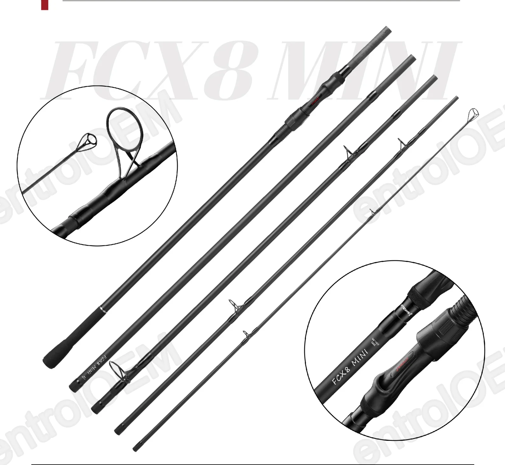

Rock Fishing Rod Guide: Long-Rod Fundamentals, Line and Rig Choices

Rock fishing asks a rod to do two jobs at once: cast a light rig accurately among rocks and absorb the shock of a fish running against them. That combination explains why rock rods look the way they do.
Why rock rods are long
Most rock fishing rods are around 4.5 m and longer. Length gives three advantages: it lifts line clear of uneven ground, it helps control a drifting float or light rig over rocks and weed, and it provides a soft cushion when a fish turns and runs. The extra length also slows the fight, which protects light line. A short power rod would be strong enough but would fish poorly in this terrain.
Moderate action protects light tackle
Rock fishing often uses light main line and a leader. A fast, stiff tip transfers every surge straight to the line, while a moderate action bends deeper and spreads the load along the blank. That shock absorption is what keeps a light hook length from parting when a fish makes a sudden run. For beginners especially, a forgiving action is safer than a stiff one.
The line is part of the system
A fine braided main line gives sensitivity and casting distance, paired with a monofilament or fluorocarbon leader chosen for the species and the rocks. The leader is the sacrificial part: it should be light enough to break before the main line and strong enough for the fish. Match the line rating of the rod and do not set drag above what the line can take.
Reel size and balance
A mid-size spinning reel is the usual choice. It must hold enough fine braid plus backing and have a smooth drag that starts without a jerk. Because rock rods are long, a heavy reel quickly becomes tiring; balance the outfit in the shop with the reel you intend to use. A reel that is too light can feel unbalanced and cast poorly with a long rod.
Rock fishing, surf casting and shore jigging are different
These methods are often confused. Rock fishing uses long, moderate rods and light rigs around structure. Surf casting uses even longer rods to throw heavy leads far from a beach. Shore jigging uses a shorter, stronger fast rod to work metal lures from rocks or beaches. A rod designed for one is not automatically right for the others; check the rated lead or lure weight before you buy.
| Method | Typical rod | Line / lure | Reel |
|---|---|---|---|
| Rock fishing | Long, moderate action | Fine braid + leader, light rigs | Mid-size spinning |
| Surf casting | Very long, heavy | Heavy leads for distance | Large spinning / surf reel |
| Shore jigging | Shorter, fast action | Metal lures, braid | Mid spinning or casting |
Safety is part of the setup
Rock marks can be slippery and waves can arrive without warning. Wear footwear with grip, keep a clear path to retreat, fish with a partner where possible and never turn your back on the water. A good rod will not compensate for an unsafe position. This is especially true on unfamiliar coasts and at dawn or dusk.
Rig choices change what the rod needs to do
The most common rock fishing rigs float a bait or present a light weight near the bottom. A float rig asks the rod to lift line cleanly and detect a bite through wind and surface movement, so length and a sensitive tip matter. A bottom rig asks the rod to register a subtle take while holding position in current, so a moderate action and a steady backbone are more useful. If you plan to fish both, choose a moderate action rod in a middle length rather than a specialised extreme.
How to specify a rock rod for a saltwater market
For an OEM range, define the fishing method before the blank. Record the target length, the expected line class, the float or lead range, the number of sections, the finished weight and the corrosion resistance of guides and reel seat. Ask the supplier to confirm each figure against the intended market, and verify the finished rod on a sample with the actual reel and line. A long rod that is too heavy will sell poorly no matter how well it is built, so weight is a commercial specification as much as a technical one.
Turn the research into a specification
If you are building a range under your own brand, we can help turn these choices into a repeatable rod and reel specification. Send us your target species, water type and quantities and we will come back with options.